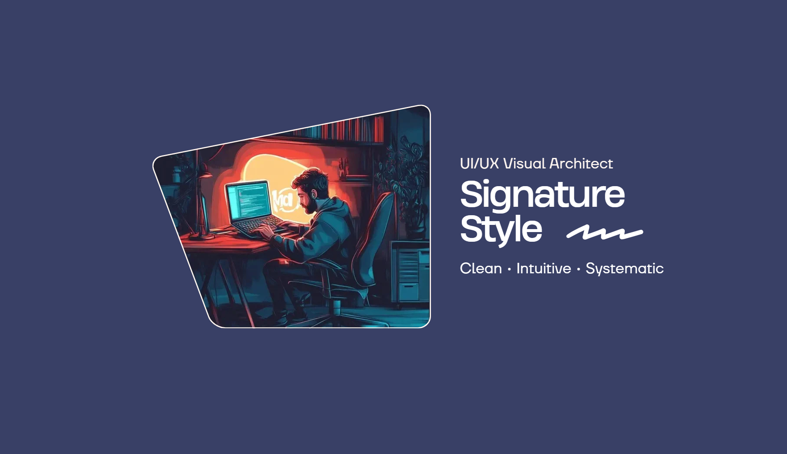
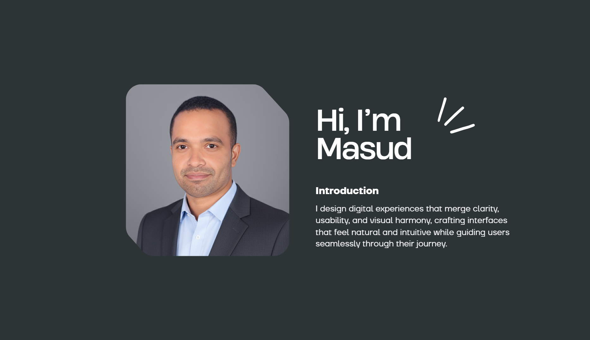
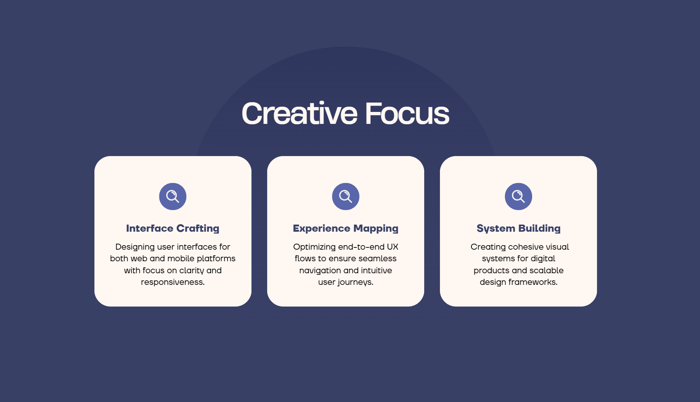
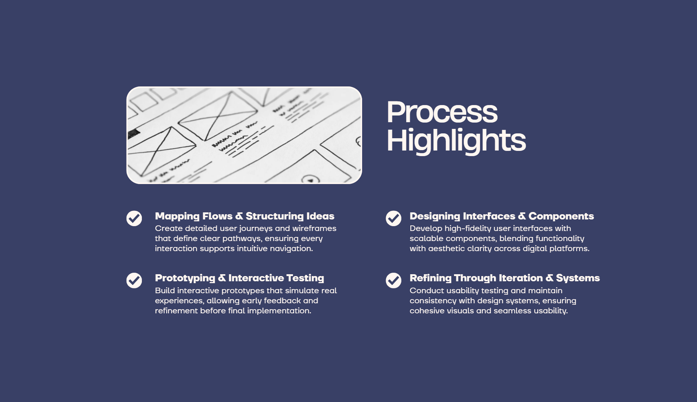
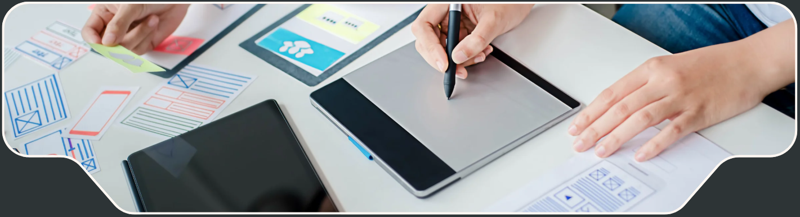
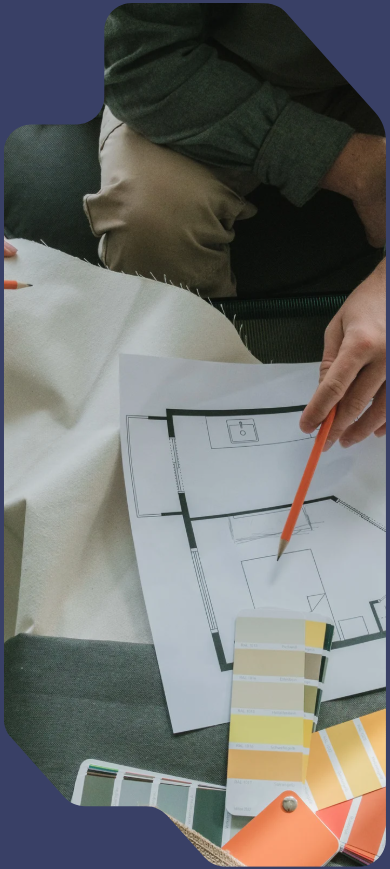
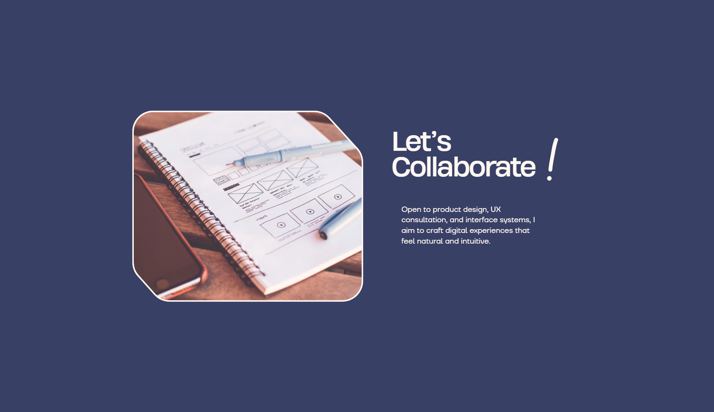

EduoSphere is an e-learning platform for web and mobile. As a UI/UX Designer, I designed intuitive interfaces and prototypes, improved user flows, and collaborated with developers to deliver responsive, user-friendly experiences that increased engagement.
A web-based enterprise risk management platform built to simplify complex risk processes. I designed data-heavy dashboards, structured risk evaluation workflows, and improved reporting clarity. My focus was on usability, information hierarchy, and making critical decision-making faster and more efficient.

Paronsoft is a Europe-based tech company where I worked as a Senior Product Designer. I led user-centered designs for web and mobile, handling research, wireframes, prototypes, and high-fidelity interfaces. I collaborated with teams, mentored junior designers, and ensured consistent, efficient design standards.
Led end-to-end web and mobile product designs, creating intuitive, visually appealing, and user-friendly interfaces. Improved user flows and optimized journeys for higher engagement. Collaborated with product managers, developers, and stakeholders to align designs with business goals. Mentored junior designers, conducted design reviews, and streamlined workflows to maintain consistency and quality across projects.

A detailed history of my design career and roles.
Paronsoft is a Europe-based tech company where I worked as a Senior Product Designer. I led end-to-end user-centered designs for web and mobile, including research, wireframes, prototypes, and high-fidelity interfaces. I improved user flows, optimized journeys, collaborated with cross-functional teams, mentored junior designers, and ensured consistent, scalable design standards.
Led end-to-end web and mobile product designs, creating intuitive, visually appealing, and user-friendly interfaces. Improved user flows and optimized journeys for higher engagement. Collaborated with product managers, developers, and stakeholders to align designs with business goals. Mentored junior designers, conducted design reviews, and streamlined workflows.
Focused on rapid prototyping and user testing for various client projects. Designed responsive web layouts and mobile apps with a strong emphasis on usability and visual storytelling. Worked closely with front-end developers to ensure pixel-perfect implementation of design mockups.
Started my professional journey by assisting in brand identity design and user interface concepts. Learned the fundamentals of user experience research and iterative design processes. Contributed to social media graphics, web banners, and basic UI components for local business websites.
A collection of my recent works and digital experiments.
Behance is a global creative portfolio platform owned by Adobe where designers showcase their professional work. I use it to publish selected UI/UX case studies, including research insights, wireframes, prototypes, and final visual designs.
EduoSphere is an e-learning platform for web and mobile. As a UI/UX Designer, I designed intuitive interfaces and prototypes, improved user flows, and collaborated with developers to deliver responsive, user-friendly experiences that increased engagement.
A web-based enterprise risk management platform built to simplify complex risk processes. I designed data-heavy dashboards, structured risk evaluation workflows, and improved reporting clarity. My focus was on usability, information hierarchy, and making critical decision-making faster and more efficient.
Risk Manager is a centralized risk monitoring system tailored for operational teams. I redefined the user experience by simplifying multi-step assessments, enhancing data visualization, and ensuring consistency across modules. Close collaboration with engineering ensured scalable and performance-driven design execution.
Paronsoft delivers custom web and mobile solutions for international clients. As a Senior UI/UX Designer, I translated business requirements into structured user flows, interactive prototypes, and scalable design systems. I worked closely with cross-functional teams to ensure seamless implementation and consistent product experiences.
CodeCraft is a collaborative IDE enabling real-time peer programming and integrated version control. I designed a clean, developer-focused interface that balances functionality with clarity. Special attention was given to live collaboration indicators, code readability, and minimizing cognitive load during teamwork.
Alexandra DB is a French singer, songwriter, and producer blending pop and electronic music. For her digital platform, I designed intuitive interfaces and prototypes, improved user flows, and collaborated with developers to deliver a responsive and engaging user experience.
Bruce Wallas is a construction project management platform. I crafted workflow-based interfaces to manage timelines, resources, and reporting efficiently. Emphasis was placed on visual clarity, real-time tracking, and improving communication between project stakeholders.
A design-to-development collaboration platform built to bridge communication gaps. I focused on structured handoff experiences, organized component libraries, and interaction documentation to ensure smoother transitions from design to development.
Footway is a retail management platform for spotify. I optimized inventory tracking, sales dashboards, and store management workflows. The design approach prioritized operational efficiency, easy navigation, and scalable UI components for multi-store environments.